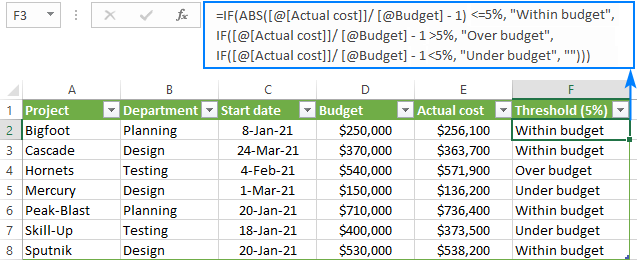

About Me
I am a graduate of Computer Engineering, a field that has always captivated me with its blend of innovation and problem-solving. Throughout my academic journey, I immersed myself in the complexities of integrating software and hardware, constantly seeking to deepen my understanding of the digital world. My passion for technology was evident not only in my academic pursuits but also in everything I do such as report automation using excel helping business to have a visual understanding of how much their company gaining profit. During my time in college, I took on the role of a student leader, driven by a desire to contribute positively to the community and as an evident of my passion for helping other people. As a city scholar, where I learn to value more responsibility balancing academic, personal and social life.
After graduating, I was honored to be invited by my school to participate in a year-long incubation program for startups while also being an Executive Assistant. This experience provided me with invaluable insights into the world of entrepreneurship, where I learned the importance of effective communication, time management, and organizational skills. Throughout the program, I supported various aspects of startup operations, from managing schedules and coordinating meetings to assisting with project management tasks and providing administrative support to team members. This hands-on experience equipped me with the practical skills and problem-solving abilities necessary to thrive in fast-paced and dynamic environments.
Furthermore, my time in the incubation program deepened my understanding of the crucial role that virtual and executive assistants play in supporting the success of businesses, particularly in the digital age. I witnessed firsthand how skilled assistants can streamline workflows, enhance productivity, and facilitate seamless communication between team members and stakeholders. Inspired by these observations, I am eager to leverage my diverse skill set and passion for organization and efficiency to excel in a virtual/executive assistant role.
Skills
- Administrative Support
- Project Management
- Basic Photo and Video Editing
- Data Entry and Analysis
- Social Media Management
Portfolio
Administrative Assistant
From managing emails and calendars to organizing documents and scheduling appointments,
I handle all your administrative tasks with precision and attention to detail.
Data Entry
Need help with data entry or conducting market research? I've got you covered.
I excel at gathering and organizing data, ensuring accuracy and reliability in every project.
Social Media Management
Enhance your online presence and engage with your audience effectively through strategic social media management.
From content creation to community engagement, I help you build and maintain a strong online brand presence.
Contact Me
If you'd like to discuss how I can help your business, please email me.